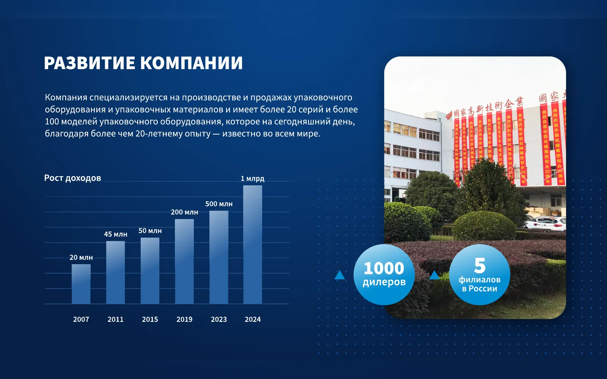

Объяснить сложное
Как работает оборудование, из каких этапов состоит процесс, чем одна модель отличается от другой. Схемы и сравнения вместо абзацев текста.
Услуги
Делаю инфографику для маркетплейсов и B2B-каталогов: карточки товаров, схемы, сравнения и цифры. В вашем фирменном стиле и с проверкой данных до начала дизайна.

Задачи
Инфографика нужна там, где текстом объяснять долго, а таблица из Excel не читается. Хорошая схема за несколько секунд показывает, как устроен продукт, чем он отличается от аналогов и почему ему можно доверять.
Я работаю с производственными и экспортными компаниями больше 10 лет. У таких клиентов много технических данных: характеристики оборудования, состав, нормативы, производственные цепочки. Моя задача в разработке инфографики: выбрать из этих данных главное и выстроить его так, чтобы покупатель или закупщик понял продукт сам, без долгих пояснений по телефону.
Как работает оборудование, из каких этапов состоит процесс, чем одна модель отличается от другой. Схемы и сравнения вместо абзацев текста.
Динамика, доли, география поставок, производственные мощности. Данные из отчётов превращаются в понятные диаграммы.
Характеристики, преимущества, состав, комплектация и способ применения. Для каталога, сайта и карточки товара.
Слайды презентаций, посты, буклеты и материалы для выставки в едином стиле с остальным брендом.
Форматы
Делаю инфографику на заказ под конкретный носитель: от этого зависят размеры, количество текста и формат файлов.
Инфографика для карточек товаров: преимущества, характеристики, размеры, комплектация. Серия слайдов в одном стиле, чтобы линейка смотрелась цельно.
Схемы устройства, сравнительные таблицы и технические характеристики для каталога продукции и коммерческих предложений.
Отдельные слайды с данными или вся визуальная часть деки. Если нужна презентация целиком, это отдельная услуга.
Схемы работы с заказчиком, этапы производства, цифры компании, сравнение продуктов на страницах каталога.
Плакаты, листовки, развороты каталога и материалы для стенда. Готовлю файлы под требования типографии.
Когда схема должна раскрываться по шагам, например в ролике или на экране стенда, статичную инфографику можно оживить.
Два сегмента
На маркетплейсе инфографика работает в карточке товара. Покупатель листает слайды за несколько секунд, поэтому на каждом должна быть одна мысль: главное преимущество, размеры, состав, комплектация, способ применения. Важно, чтобы вся линейка товаров выглядела одной системой, а не набором разных картинок. Для производителей, у которых уже есть упаковка, связываю карточки с ней по цвету и графике. Подробнее о том, как я работаю с дизайном упаковки.
В B2B инфографику читают внимательнее и дольше: закупщик, инженер или инвестор сравнивает варианты и проверяет цифры. Здесь важна точность: единицы измерения, источники, корректные пропорции на диаграммах. Такая инфографика живёт в каталогах, презентациях, на сайте и на выставочных стендах.
И в карточке товара, и в каталоге оборудования работают одни правила. Одна мысль на одну схему. Крупные цифры там, где цифра главное. Подписи, которые читаются без лупы. Одинаковые иконки и цвета для одинаковых понятий по всей серии. Если в каталоге «сталь» обозначена серым, она будет серой и на сайте, и в презентации.
Этапы
Работаю спринтами и показываю промежуточный результат каждые несколько дней. Подробно о порядке работы на странице как я работаю.
Вы присылаете исходники: тексты, таблицы, отчёты, фото продукта, брендбук. Обсуждаем, где будет жить инфографика и кто её читатель.
Сверяю цифры, единицы измерения и формулировки. Нестыковки отмечаю и уточняю у вас до начала дизайна.
Решаю, что главное, что второстепенное и в каком порядке это читать. Согласуем черновую схему.
Отрисовываю инфографику в вашем фирменном стиле: цвета, шрифты, иконки, графические элементы.
Готовлю версии под нужные носители и размеры и передаю файлы для сайта, печати, презентации или маркетплейса.
Исходники
Чем полнее исходники, тем точнее получится инфографика и тем меньше уйдёт времени на уточнения. Обычно я прошу:
Если чего-то нет, это не препятствие: недостающее обсудим на брифе. Вопросы удобно заранее пройти по брифу.
Стоимость
Стоимость считаю после брифа. Она зависит от количества слайдов или схем, сложности данных, нужно ли рисовать иконки и иллюстрации с нуля, сколько версий под разные носители и языки потребуется и есть ли у вас готовый фирменный стиль. Для серии карточек сначала утверждаем систему на первых слайдах, а потом переносим её на всю линейку.
Прикинуть бюджет можно в калькуляторе, точную сумму назову после разговора о задаче. Небольшие проекты оплачиваются сразу, для проектов от 60 000 ₽ беру предоплату 50%.
Вместе
Инфографика берёт цвета, шрифты и иконки из фирменного стиля. Если стиля нет, есть смысл начать с него, тогда карточки, каталог и сайт будут выглядеть одним брендом.
FAQ
Стоимость считаю после брифа. На цену влияют объём и сложность данных, количество слайдов в серии, нужны ли иллюстрации и иконки с нуля, сколько версий под разные носители. Ориентир можно получить в калькуляторе.
Исходные данные даёте вы: характеристики, таблицы, отчёты, тексты. Я проверяю их на нестыковки, выбираю главное и выстраиваю порядок чтения. Если данных не хватает, скажу, что нужно уточнить.
Да. Я говорю и пишу по-английски, поэтому английскую версию можно согласовывать со мной на английском. Другие языки обсуждаем на брифе.
Можно. Но если товаров в линейке несколько, выгоднее сразу заложить общую систему: тогда следующие карточки делаются быстрее и выглядят единообразно.
В расчёт закладываю резерв на рабочие уточнения, поэтому мелкие правки не превращаются в доплаты. Если меняется задача или растёт объём, отдельно обсуждаем новый состав работ.
Для внутреннего черновика иногда да. Для карточек и каталогов, где важны точные данные и единый стиль бренда, нужна ручная работа. Сам я использую платные ИИ-инструменты как помощь, а итог проверяю и довожу вручную.
Ответы на общие вопросы о работе, оплате и документах собраны на странице частых вопросов.
Связаться
Пришлите задачу и исходные данные
Расскажите, для какого носителя нужна инфографика и сколько её, а я предложу структуру и посчитаю стоимость.